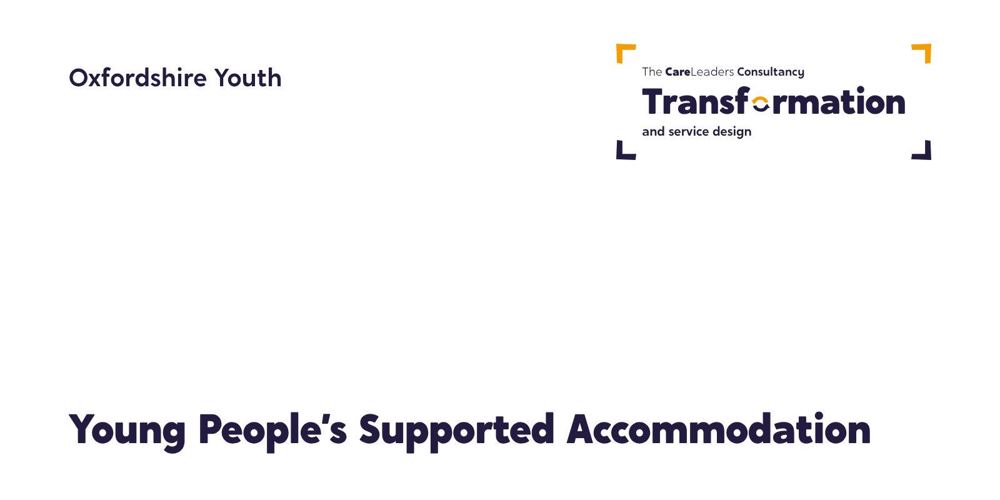

Oxfordshire Youth: helping a grassroots youth work charity win and set up a county-wide housing service
Oxfordshire Youth wanted to bring a youth work approach to supported accommodation for young people aged 18 to 24. We helped the charity shape its proposal and its pitch, then plan how to move 130 young people into the new service.

The starting point
Oxfordshire’s supported accommodation for young people aged 18 to 24 was re-tendered at the end of 2019, with five existing providers running it. Oxfordshire Youth, a grassroots youth work charity, wanted the work in the hands of youth workers, rather than going as usual to what it called “national private organisations who typically are the giants of the commissioning/procurement world”. Oxfordshire County Council awarded the contract to Response Organisation, with Oxfordshire Youth as its sole sub-contractor delivering the youth work model.
What we heard
Our first sessions with Oxfordshire Youth, in May 2020, covered training, a strategy for co-designing the service with young people, and ideas the charity already had, such as young inspectors and tenancy awards. The plan for moving young people into the new service started with a question to senior leaders across the system: how can we effectively transition young people into the new service? Their answers shaped the transition offer.
What we did
- Step 1ShapeA proposal with lived experience at the centre of the model
- Step 2PitchCoaching to make the case for a youth work approach to housing
- From May 2020Plan the moveA 60-day, three-phase, trauma-informed transition for 130 young people
- Step 4Build the teamA new staffing structure and the Youth Engagement Worker job description
How we worked
Youth work first
The model started from how youth workers build relationships with young people, not from how housing is usually managed.
Trauma-informed
Every move is a big change for a young person, so the set-up was planned with trauma in mind.
Lived experience in the model
Lived experience was part of the model and the pitch from the start.
Oxfordshire Youth led the work and runs the service. Our part was the thinking and preparation around the proposal, the pitch and the first months of the new service.
What changed
The contract was won, and Oxfordshire Youth went on to run the service. Writing in 2023, its Deputy CEO said the work was reaching 130 young people every year with a youth work approach to supported accommodation, and described winning it as “radical systems change work”.
See the work
What we made, and what it looked like.
Service design
A youth work model for supported accommodation, with trauma-informed practice built in.
Lived experience in the model
Care-experienced young people shaped the model and the staff role.